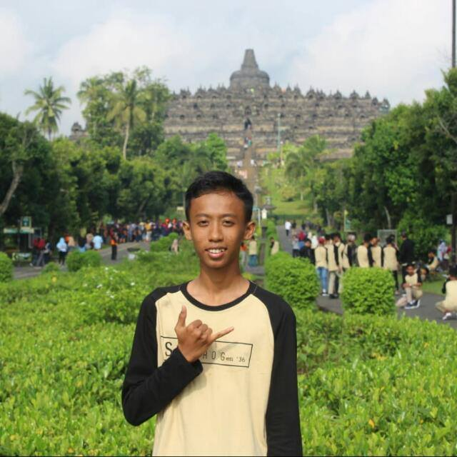

Deri Valentino
Saya Deri Valentino, alamat saya di Provinsi Jawa Timur, Kabupaten Banyuwangi, Kecamatan Rogojampi, Dusun Jagalan Rt: 03 Rw: 01. Saya sedang menempuh pendidikan di Politeknik Negeri Banyuwangi, dengan mengambil jurusan Teknik Informatika. Pengalaman umkm yang telah saya buat adalah umkm-k dimana mengambil topik yaitu pengolahan baso ikan "Hiwan" yang diolah menggunakan ikan bandeng. Dimana olahan baso banddeng diharapkan dapat disukai anak-anak terutama pada masa pertumbuhan agar mencukupi kebutuhan omega 3 yang mempengaruhi daya ingat anak